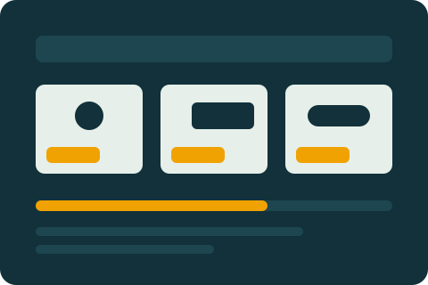

Pinjam kabel, proyektor, dan HDD tanpa catatan manual.
Sistem peminjaman alat pendukung praktikum dan mata kuliah Prodi Manajemen Informatika Angkatan 2025. Cek stok, ajukan peminjaman, dan pantau statusnya dalam satu tempat.

Stok terlihat langsung
Mahasiswa melihat jumlah alat tersedia sebelum mengajukan, sehingga pengajuan tidak sia-sia.
Alur persetujuan jelas
Admin Lab menyetujui atau menolak, lalu mengecek barang secara fisik sebelum serah terima.
Riwayat tercatat
Pengambilan, pengembalian, dan keterlambatan tercatat sehingga mudah ditelusuri.
Alat yang bisa dipinjam
Kategori Peralatan Pendukung Praktikum. Proyektor maksimal 1 hari, alat lain 3 hari.
Status peminjaman
Tahapan yang dilalui setiap pengajuan.
- Menunggu Review
- Pengecekan Barang
- Siap Diambil
- Dipinjam
- Dikembalikan
Pengajuan juga bisa berakhir sebagai Ditolak, Dibatalkan, atau Terlambat.